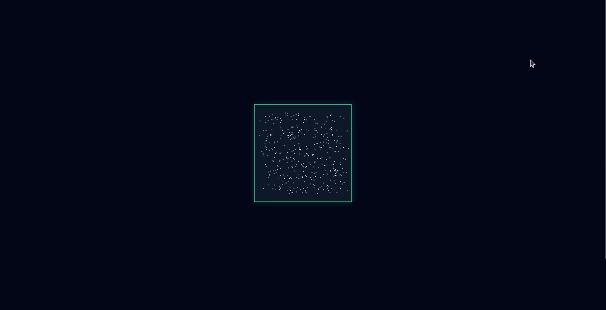

Participation à la Nuit de l'Info
Contexte du projet
Ce projet a été réalisé en équipe de quatre lors d’un challenge d’une nuit. L’objectif était de concevoir un site web permettant d’apprendre de manière ludique les principes de Nird. Aucune contrainte technique ou graphique n’était imposée, ce qui nous a offert une grande liberté de création. Nous avons choisi d’utiliser uniquement du HTML et du CSS pour la structure et le design, accompagnés de JavaScript pour gérer les différentes activités interactives proposées sur le site.
Contribution personnelle
J’ai participé à hauteur d’environ 35% au développement du projet. Je me suis principalement occupé de la conception de l’aspect global du site, en veillant à la cohérence visuelle et à la navigation entre les différentes pages. J’ai également développé deux activités interactives : un mini-jeu de cartes à retourner, axé sur la mémorisation des principes de Nird, ainsi qu’un petit RPG ludique permettant de mettre en pratique ces notions à travers des questions.
Ce que j’ai appris
Ce projet m’a permis de renforcer mes compétences en JavaScript, particulièrement à travers la conception des mini-jeux. C’était la première fois que je réalisais ce type de fonctionnalités interactives, ce qui m’a poussé à explorer de nouvelles approches pour la gestion des événements, la manipulation du DOM et la logique de jeu côté client.
Lien du projet
Ce sont quelques fonctionnalités de notre site, je vous invite à cliquer ici pour découvrir le reste.
Quelques traces du Projet
Page d'accueil
Mini-Jeu : Les Paires